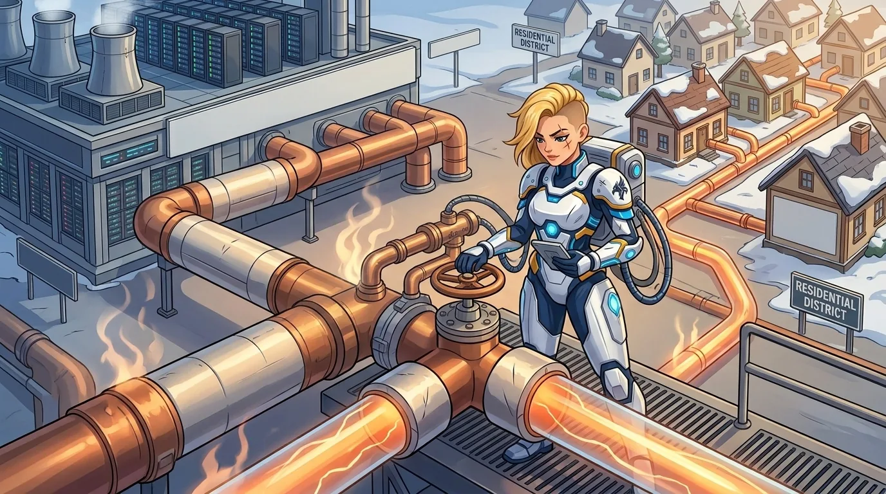

Dein Agent läuft mit Schweizer Strom aus erneuerbaren Quellen
Cora läuft in Schweizer Rechenzentren mit erneuerbarem Strom - Wasserkraft und Solar aus dem Netz, an dem sie hängen. Derselbe Energiemix wie im Rest des Landes.
Schweizer Wasserkraft & Solar
Schweizer Strom gehört zu den saubersten Europas - überwiegend Wasserkraft, mit schnell wachsendem Solaranteil. An diesem Netz hängt Cora.
Erneuerbare Versorgung, vertraglich
Wir wählen Schweizer Hosting-Partner mit einem Vertrag über erneuerbaren Strom und nennen sie in der Due Diligence.
Effizienz als Auswahlkriterium
Wir bevorzugen Standorte mit Flüssigkühlung, geringem Overhead, ohne Verdunstungskühlung und mit Abwärmenutzung, wo es sie gibt.
Weniger Compute pro Aufgabe
Auch sauberer Strom kostet das Netz etwas. Routing und Caching halten die Zahl der Token - und die Energie dahinter - tief.
Omnivors Rechnung zahlt jemand anders
In der Geschichte, gegen die Cora gebaut ist, gibt es einen Konzern namens Omnivor. Er ist erfunden. Sein Umgang mit Strom und Wasser ist es nicht.
Nehmen, bis nichts mehr da ist
Er baut, wo der Strom billig ist und niemand nachfragt. Er kühlt mit Flusswasser, das im Sommer ohnehin zu warm ist. Er stellt Dieselgeneratoren daneben, wenn das Netz nicht mitkommt, und bläst die Abwärme in die Luft. Nichts davon steht in seiner Klimabroschüre - bezahlt wird es von der Region, in der er landet.
Am selben Netz wie das Land
Cora hängt an Schweizer Wasserkraft und Solar, läuft bevorzugt in Häusern mit Flüssigkühlung und Abwärmenutzung und leitet jede Aufgabe an das kleinste Modell, das sie erledigen kann. Das macht sie nicht klimaneutral - es macht sie überprüfbar. Was wir daraus nicht ableiten, steht darunter.
Die ganze Geschichte →Was wir behaupten - und was nicht
Grüne Versprechen sind leicht gemacht und schwer zu belegen. Hier ist die Linie, die wir halten.
Das grünste Token ist das, das nie erzeugt wird
Nachhaltigkeit ist auch eine Engineering-Entscheidung. Cora leitet Arbeit an das kleinste Modell, das sie erledigen kann, und cacht konsequent - das senkt deine Rechnung und die Last im Netz.

Frag uns zu Hosting und Energie
Wir zeigen deinem Team, wo Cora läuft, wer den Strom liefert und was wir heute belegen können.